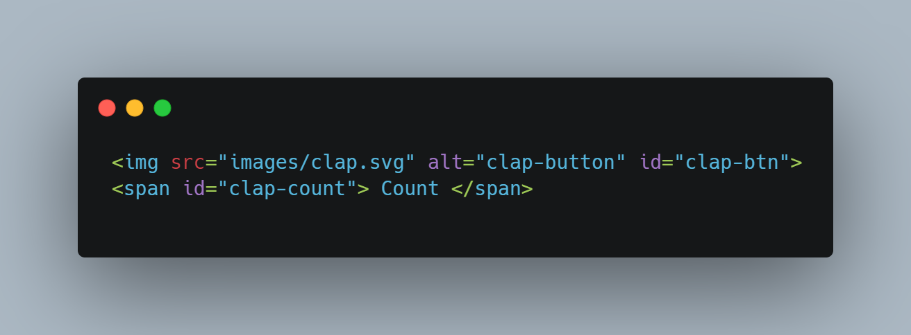
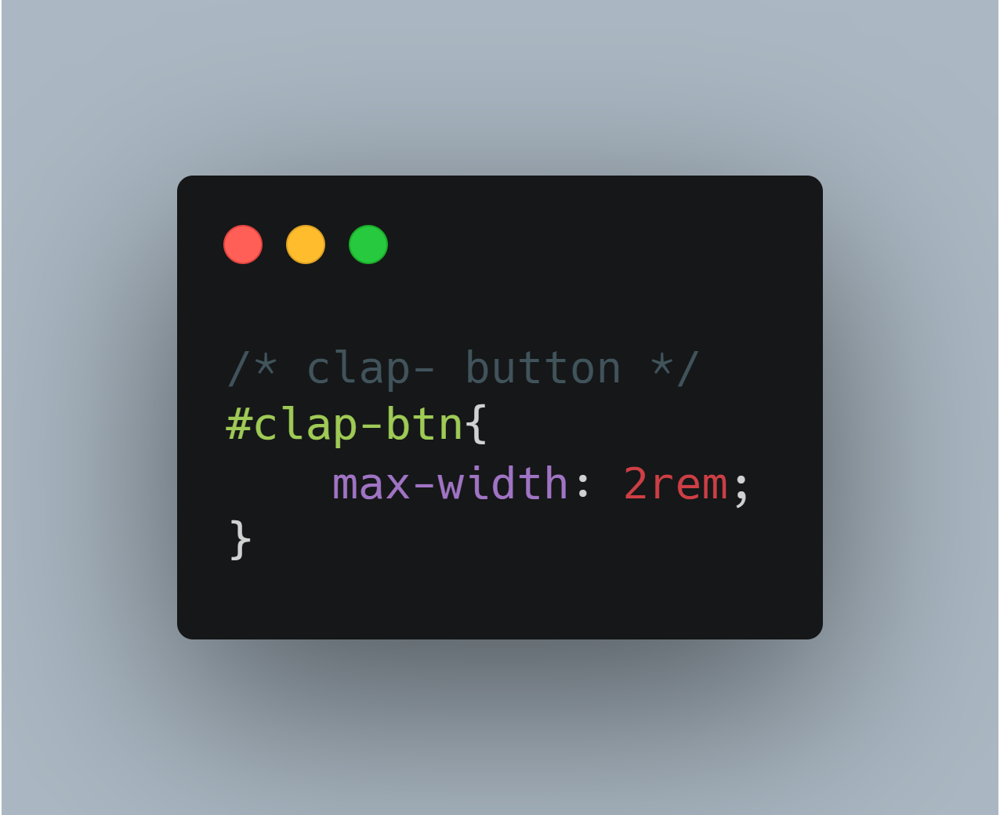

Add a Clap button
Ever wanted to add clap reaction as in Medium to your personal blog. Lets see how its done. First we need the icon , you can get the icons from Flaticons or any other website of your choice. The one used here is taken from flaticons , you can customise the color of your icon to match the theme of your blog. I have downloaded the icon as a SVG document.
Now we need to add the image to the HTML document , we use an img tag for the purpose. We also need the count of claps along the icon , so we need both of them in a single line. Inline tags can be used for this , span is an inline tag which could be used to display the count. If inline tag is a new concept for you , then read about it here This is a sample code snippet of including img and span in you HTML document.
Now we need to style these elements, for span the default styling is sufficient , for the image we need to adjust its size. The below example refers to the styling of the clap icon in this page, it may differ in your case, just play around with CSS. If you get stuck just Google it, Mozilla Developer Network is a great resouce.
To make this icon interative we need to use Javascript, we could brake it down to simple steps
- select the icon
- check whether the user clicks the icon
- if user clicks the icon update the count
If you liked this blog give it a clap 👏🏻
Count